Action Nodes
Below is a summary of all the action nodes in the visual scripting system. These action nodes perform all of the action logic for the visual scripting system.
Contents
- Action Nodes (Flow)
- Action Nodes (Unit)
- Action Nodes (Player)
- Action Nodes (Audio)
- Action Nodes (Feedback)
- Action Nodes (Projectile)
- Action Nodes (Region)
- Action Nodes (Quests)
- Action Nodes (Pickups)
- Action Nodes (Game State)
- Action Nodes (UI Actions)
- Action Nodes (Variables)
- Action Nodes (Global Variables)
Action Nodes (Flow)
Action > Flow
Wait
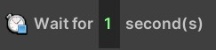
Waits for the specified amount of time before continuing the remaining actions.
Action > Flow
If statement
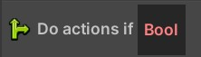
Only executes the nested actions if the given condition is true.
Action > Flow
While statement
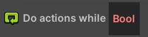
Executes the nested actions while the specified condition is true.
Action > Flow
For statement
Executes the nested actions a set number of times.
Action > Flow
For each unit in unit group
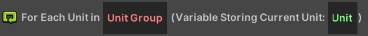
Executes the nested actions for each unit in the specified unit group.
Action > Flow
Disable this script
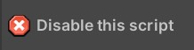
Disables this script, preventing the events from triggering.
Action > Flow
Send event message
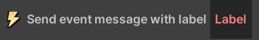
Sends an event message which can be received by the corresponding event message event. This allows you to have one script trigger logic in a secondary script.
Action Nodes (Unit)
…
Action Nodes (Player)
…
Action Nodes (Audio)
Action > Audio
Play audio clip
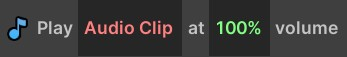
Plays the specified sound effect. Do not use this to play game music - use the
Play musicaction instead!
Action > Audio
Play music
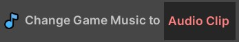
Plays the specified music. Do not use this to play sound effects - use the
Play audio clipaction instead!
Action Nodes (Feedback)
…
Action Nodes (Projectile)
…
Action Nodes (Region)
Action > Region
Destroy region
Destroys all regions with the given name (if any exist).
Action Nodes (Quests)
…
Action Nodes (Pickups)
Action > Pickups
Spawn item pickup
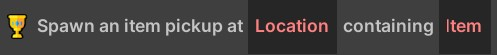
Spawn an item pickup at the specified location which contains the specified item.
Action > Pickups
Spawn gold pickup
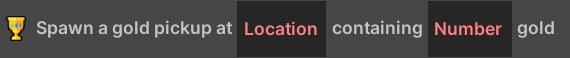
Spawn a gold pickup at the specified location which contains the specified amount of gold.
Action > Pickups
Spawn health pickup
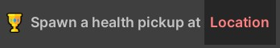
Spawn a health pickup at the specified location.
Action Nodes (Game State)
Action > Game State
Win game
Have the player win the game, taking them to the victory screen.
Action Nodes (UI Actions)
Action > UI Actions
Show debug message
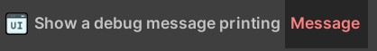
Logs the given message to the game console.
Action > UI Actions
Show in-world status message
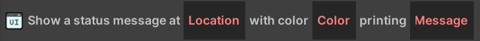
Shows the specified message in world space with the specified text and color (this is how the gold and health messages are implemented!).
Action > UI Actions
Show tutorial message
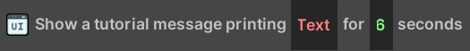
Shows the given message in a tutorial window. This is useful for giving information or instructions to the player.
Action Nodes (Variables)
…
Action Nodes (Global Variables)
…